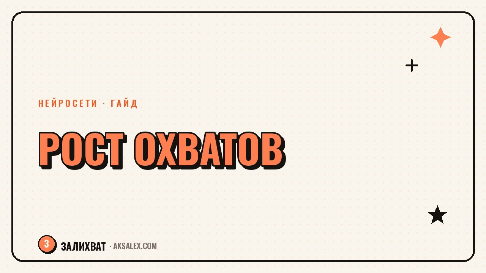

How to Grow Your Reach with Neural Networks

Reach doesn't drop because the algorithm suddenly dislikes you - most often it's because the content is repetitive, the hooks are weak, and posts go out inconsistently. Neural networks won't replace your expertise and voice, but they do take the routine work off your plate - the stuff that eats up time you could spend on what actually moves the needle: testing, analytics, and generating a volume of ideas. Let's break down where AI genuinely helps and where it just creates the illusion of productivity.
Why Reach Drops - and What Neural Networks Have to Do With It
Social platforms rank content based on engagement in the first few minutes after posting: watch time, likes, comments, saves. If a video or post doesn't hook viewers in the first few seconds, the algorithm simply stops showing it further. Neural networks help you stop guessing and start quickly testing hypotheses - generate a dozen headline, hook, or thumbnail variants and pick the one that actually works.
The second factor is consistency. Reach grows for people who post steadily, not for those who drop one masterpiece a month. AI speeds up drafting scripts and texts, so you physically gain time to publish more often without sacrificing quality.
What Neural Networks Actually Speed Up
- Generating ideas and topics for a week or month ahead
- Hook and headline variants for testing
- Drafts of scripts and post texts
- Transcribing and analyzing competitor videos
- Thumbnails and previews for feed cards
Notice that in every one of these points, AI creates a draft or variant - not the final product. The final call - trimming, re-recording, rewriting in your own tone - is always yours. That's exactly what separates content that grows from content that reads as obviously AI-generated.
A Step-by-Step Plan for the Week
Step 1. Build a Pool of Topics
Ask a neural network to brainstorm 15-20 topics for your niche, based on audience questions and trending formats. From that list, you cross off whatever doesn't resonate with you personally - without genuine interest, the video will feel forced, and it shows.
Step 2. Create 3-5 Hook Variants for Each Topic
The hook is the first 2-3 seconds of a video or the first line of a post. This is where quantity pays off: AI gives you different angles (a question, a conflict, a number, a personal story), and you pick whichever sounds natural in your own voice.
A hook a neural network invented that you couldn't say out loud in your own voice is a bad hook, even if it statistically "works" for someone else.
Table: Tasks and Tools
| Task | What to use | What to check manually |
|---|---|---|
| Ideas and topics | Text-based AI chat | Relevance to your niche |
| Hooks and headlines | Text-based AI chat | Whether it sounds natural out loud |
| Video script | Text-based AI chat | Timing and narrative logic |
| Thumbnail | Image generator | Readability of text in the preview |
| Transcribing others' videos | Transcription tool | Don't copy the structure verbatim |
Common Mistakes When Growing Reach with AI
The most common mistake is publishing AI-generated text as-is, without editing it into your own tone of voice. Audiences subconsciously sense generic phrasing, and engagement drops even for a good topic.
The second mistake is relying on just one hook format or one type of thumbnail because it worked once. Algorithms and audiences get tired of repetition faster than you'd think, so it's important to keep testing new variants rather than milking one winning trick until it stops working.
- Publishing without editing it into your own voice
- Ignoring analytics - not checking what actually worked
- Using the same hook structure in every video
- Topics that are too generic and not tied to your niche
How to Measure Results
Look not just at reach, but also at retention - the percentage of a video watched through and the time spent reading a post. These metrics show whether the hook and structure genuinely hold attention, or whether reach grew randomly because of an external factor like a trend.
Keep a simple table: topic, hook type, reach, retention. After 3-4 weeks, you'll see which formats consistently work for you specifically - and those are the patterns worth scaling with neural networks, rather than starting from scratch every week.
Frequently Asked Questions
Can you grow your reach using only neural networks, without your own face and voice?
Partially, yes, but algorithms and audiences respond better to a genuine, live presentation. AI speeds up preparation, but retention and trust are still built on your recognizable style.
How many hook variants should you generate for one video?
Usually 3-5 variants are enough to give you something to choose from, without spending more time on this than on the video itself.
How can you tell if AI-generated text sounds generic?
Read it out loud. If the phrases sound bureaucratic or too generic, rewrite them in your own words while keeping the structure.
Do you need to change your reach strategy every month?
Don't change the whole strategy - instead, regularly test new hooks and formats within your niche while tracking retention.
Do neural networks actually help boost reach through thumbnails?
A thumbnail affects click-through rate in the feed, but not retention within the video. It matters, but it's just one of the growth factors.
not by hand